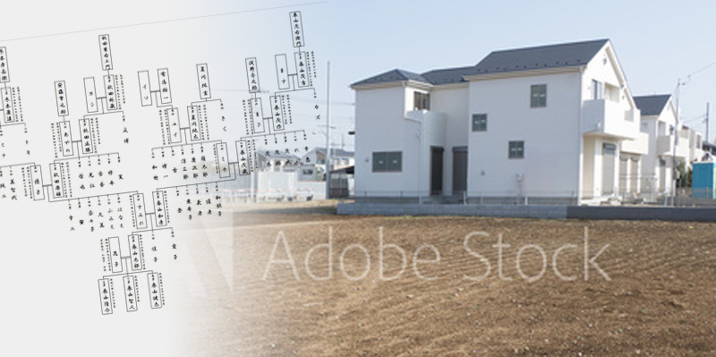
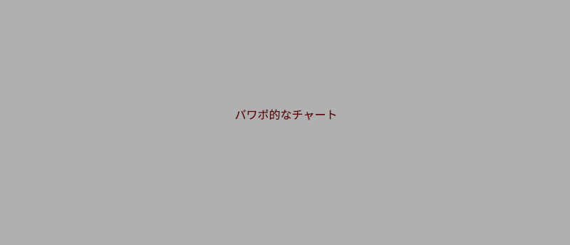

神奈川県小田原市に住むＮさんは今年で８０歳。今から２５年前の５５歳の時に、固定資産税対策と追々の相続対策として、自分の土地に賃貸アパートを建設しました。
アパートは、２ＤＫの部屋が１０戸からなる木造２階建て。家賃６万円、入居率７０％で３０年返済の計画を立ててスタートしたアパート経営でした。

建設当初はさいわい満室状態が続きましたが、１０年近くすると徐々に空室が生まれ、２５年経った今では家賃を５万円に引き下げたにもかかわらず、半分の５戸が空室になってしまいました。それに伴い、ローンの返済も今では完全に赤字になってしまいました。
借金をするのは相続税対策としては良いものの、節税以上に借金が膨れ上がってしまったらそもそもローンの返済ができない。そう考えたＮさんは、不動産相続の専門家である鈴木さんにアパートをどうしたら良いかを相談することにしました。
Ｎさんの相談内容をヒヤリングした鈴木さんは、さっそく不動産相続解決センターのコンサルタント・税理士・弁護士・司法書士等による解決チーム内でディスカッションし、Ｎさんへのアドバイスプランをまとめました。
Ｎさんとの打ち合わせで、鈴木さんは開口一番、「これはリフォームするのが一番ですね」とアドバイスしました。
「自分なりにもいろいろな人から話を聞いてきたから、もう人気のなくなってしまったアパートだし、『取り壊そう』って言われるのかなって、うすうす思っていたんだよね。逆に、『リフォームしましょう』って言われてはじめて、自分がもう取り壊すしかないって思い込んでいたことに気付いて」
「えっ、このアパートが本当に返り咲くの？お客さん入ってくれるの？って、最初は信じられなかったですよ。でも、鈴木さんが言うんですよ『このアパート、最初は満室だったんでしょう？。それには、理由があるんですよ。』って。たしかに最初は満室だった。うちのアパートはそこそこ立地がいいんですよ、ターミナル駅の沿線駅から徒歩６分だし、すぐそばにスーパーもある。それは変わっていなかった。で更に鈴木さんが言うには『この２５年、人の好みも変わって、周りに新しいアパートも建った、でもＮさんのアパートは昔のまま。昔のままどころか、昔よりもよっぽどボロくなっちゃった。』だからお客さんが入らないだけです、って。言ってることはもっともだ、って思った」
実際にＮさんのアパートの室内を鈴木さんとともに確認したところ、入居者が嫌がる一番のポイントが水回りの古さと老朽化であることを突き止めました。
そこで、トイレをシャワートイレにし、古いキッチンをシステムキッチンに、ユニットバスをバス・トイレ別に変更。さらにセキュリティ向上のためにモニター付きインターフォンも設置し、壁紙などの内装もおしゃれにリニューアルするという方針が見えてきました。
「どこをどうリフォームしたら若い子に気に入ってもらえるかなんて、俺には全然分からないですよ、だって俺はもう爺さんだからね。でも鈴木さんは、さすがの目線だよ、不動産のプロだから。借り手がつくマンションとつかないマンションのことを何百・何千って知ってるわけだからね。全面的におまかせしましたよ」
入居率を上げるためのリフォーム代は、１戸あたり１５０万円と、外観リフォームの５００万円の、計２，０００万円。１２年返済だとすると月々約１５万円の追加返済費用が発生します。これでは仮に満室に戻ったとしても５０万円（５万円×１０戸）−銀行への返済額（リフォームの返済１５万円＋元々の返済２０万円）＝１５万円しか手元に残らないうえに、満室になる保証はどこにもない、ずいぶんリスクの高い投資なのではないか？とＮさんは考えました。

「いやいやほんとに素人考えの素人計算だったんだけど、最初はそう思ったんですよ。これ、儲からないじゃないか？って。そう鈴木さんに言ったら、ここからが面白いんですよ、２つ提案をしてくれて」
「まず俺が勘違いしてたのは、１０戸をぜんぶリフォームしなきゃいけないって考え。だって今入居してくれてるお客さんは、入居中なんだからリフォームしなくていい。したがって最初にリフォームするのは５戸だから、その時点で投資額は半分になるんだよね。で、いま入居がある部屋は、いつかその部屋が空室になったら、そのタイミングでリフォームすればいい。さみだれにお金が出ていって、さみだれに入ってくるっていう仕組みなんだよ」
「もう１つが、これがいちばんナルホドなと思った提案だったんだけど、『不動産相続解決センター流のサブリース活用法』をやろうっていう話なんだよ」
「サブリースって、今のアパート経営者にとっては、一番危なっかしいやつでしょう。だまされた！っていう話はごまんと聞きますよ。建設会社が『家賃は保証しますから』って言ってサブリース契約を組んで、しばらくしたらアレコレ難癖をつけられて、家賃をちょっとずつ下げられちゃうっていう。だからサブリースって言われた時に思わず『えっ！？』って顔をしかめたら、鈴木さんから『最後まで聞いてくださいね』って言われちゃったよ」
ここで鈴木さんが提案した、
「不動産相続解決センター流」サブリース活用術とは…
鈴木さん「サブリースは、選び方の目利き次第、そして運用の仕方次第なんです。３０年といった長期のサブリースを組んで、一回組んだらあとは放ったらかしで安心してしまうのが一番危険なのです。サブリースは運用するものだという観点に立って、途中の見直しを行っていくものなんです」
不動産相続解決センター流サブリースの仕組みについて詳しく説明を受けていくうちに、胸のつかえがスーッと消えていき、早くリフォームしたい！と思うまでになったというＮさん。
「最後にやっぱり思い出すのはね、鈴木さんから言われた、『アパートは商品なんだから、定期的にメンテナンスして、きれいにして、手をかけて面倒を見続けて、売れる商品にし続けないと、誰も買ってくれませんよ』っていう言葉。そうなんだよ。うちのアパートも、１０年前にリフォームしておけば、満室のままでいられたんだと思う。そしたらリフォーム代込でも１，０００万円近く儲かってた。今から後悔しても後の祭りだけど、こういうアパート経営のノウハウこそ、子供に受け継ぎたい。そして息子たちにも賢くアパート経営してもらいたいと思う。土地や上モノを相続するんじゃなくて、経営ノウハウを相続するってこと。その時も勿論鈴木さんにアドバイスしてもらいたいよね、末永く」
※この解決事例はプライバシーに配慮するため、人名・地名・金額などの情報をあえて改変しておりますことをご了承下さい。
※実際のサービスにおいては常に必要に応じて弁護士、司法書士、税理士ほかの有資格者と連携しながら常に法的に適正なサービスを行っております。
※この解決事例に記載した解決方法は全てのお客様に当てはまるわけではありません。似たようなケースでもお客様の置かれた環境や目的に応じて、全く異なる解決策をご提案することもございます。あくまで特定のケースにおける一例として紹介しておりますことをご了承下さい。